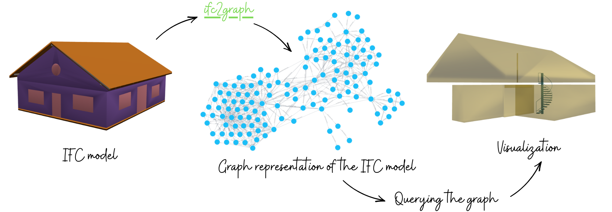
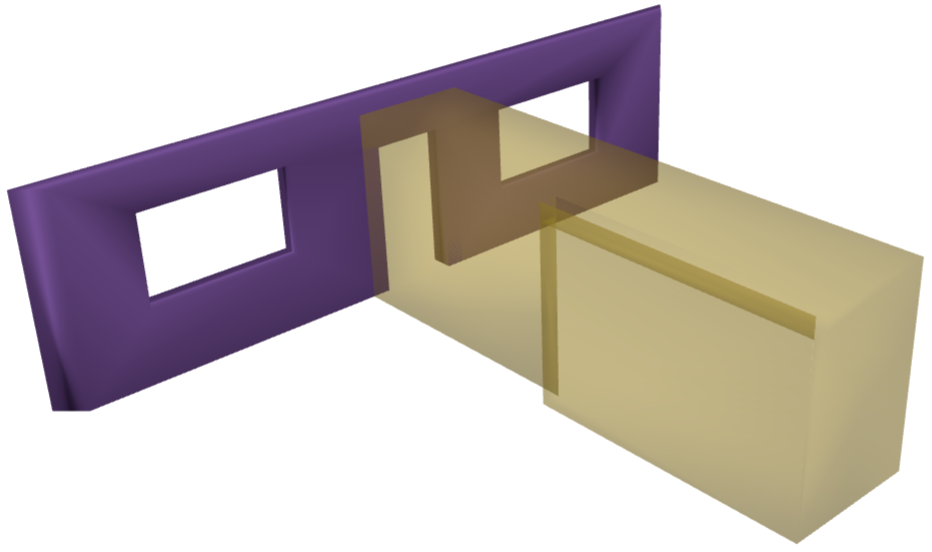
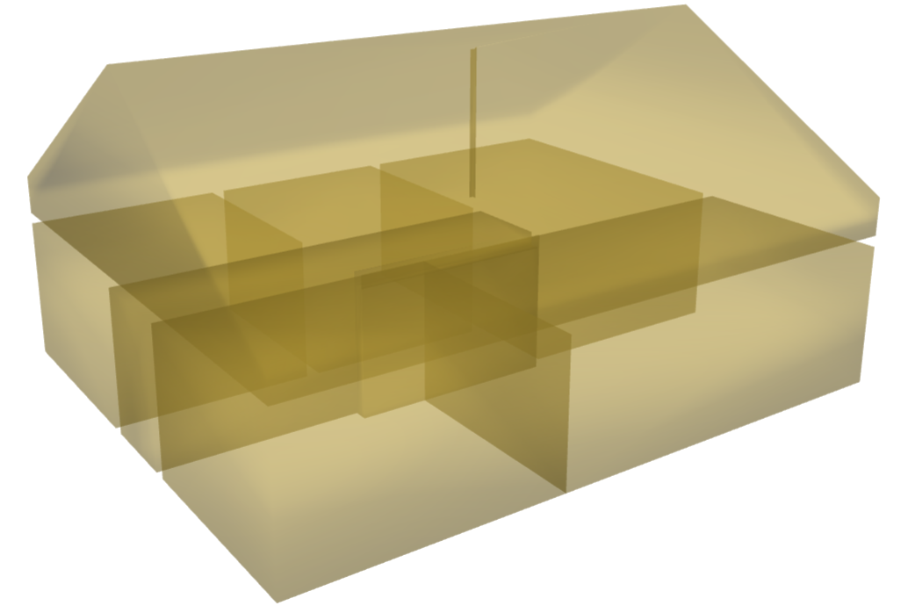
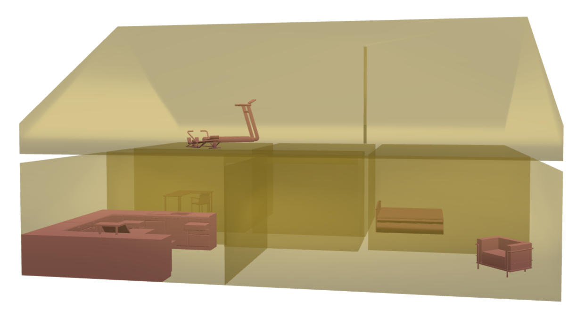

ifc2graph¶
Convert an IFC model into a graph.

ifc2graph loads every building element (IfcElement and IfcSpace) in an IFC model, runs clash detection (protrusion, pierce, or collision) on their geometry, and writes the resulting nodes and edges to a graph database. The graph generation is solely based on geometries and not on IFC relationship entities.
The underlying idea is simple. For every element in the IFC model, candidate elements are first identified using a BVH tree. Clash detection is then performed against these candidates, and whenever the triangulated meshes of two elements are found to clash, ifc2graph connects them in the graph.
Overall, ifc2graph is useful for:
- treating an IFC file as a queryable graph of elements and spaces
- inferring adjacency from geometric interaction rather than from IFC relationship entities
- tracing navigable routes (via rooms, doors, and stairs) as paths through the graph
- inspecting how two elements interact, whether by protrusion, pierce, or collision
Note
Because the graph is derived from geometric clashes rather than from IFC relationship entities, it supports queries that an incompletely authored IFC model may not answer. This includes finding a path between two rooms, locating where a furnishing element sits, recovering what walls belong to a room, checking which rooms share a wall, listing what opens into a room, and determining which rooms a stair serves. This is only a shortlist 🙂
Further queries, with outputs and visualizations, are available on the examples page.
Install¶
Requires Python 3.10 or newer.
For step-by-step setup, see Installation.
Usage¶
Graph generation¶
The API is straightforward. Pass an IFC model, Neo4j connection details (and optional arguments) to ifc2graph().
from ifc2graph import ifc2graph
clashes = ifc2graph(
"model.ifc", # IFC model
# Neo4j connection (not required if "export_to_neo4j=False")
uri="bolt://localhost:7687",
user="neo4j",
password="password",
# optional arguments: "export_to_neo4j", "tolerance" and "allow_touching".
)
clashes is a list of Clash objects (element1, element2, rel_type, collision_type), one per unique pairwise clash.
Model loaded in 0.26 seconds.
138 elements retrieved.
Clash detection started.
531 clash relationships detected in 0.13 seconds.
Writing 531 clash relationships to Neo4j.
Neo4j written in 6.25 seconds.
Optional arguments¶
| Argument | Default | Meaning |
|---|---|---|
export_to_neo4j |
True |
Export clashes to Neo4j. Set to False to skip writing to Neo4j. This is useful for exporting clash relationships to another database or pipleine. |
tolerance |
0.002 |
Intersection tolerance (0.002 -> 2mm) |
allow_touching |
True |
Count zero-volume touches as collisions. Set to False to keep only overlaps that have volume. |
Skip writing to Neo4j:
from ifc2graph import ifc2graph
clashes = ifc2graph(
"model.ifc", # IFC model
export_to_neo4j=False # Skips writing to Neo4j.
)
clashes
# Model loaded...
# ..
# ...
[
Clash(element1='1M$gxUrX1Fiwe3P64ww7U5', element2='3tpK9YydX1r9wtGfAxLhhX', rel_type='Door-OpeningElement', collision_type='protrusion'),
Clash(element1='1M$gxUrX1Fiwe3P64ww7U5', element2='0Lt8gR_E9ESeGH5uY_g9e9', rel_type='Door-Space', collision_type='protrusion'),
Clash(element1='3jZHeNcfvDMf9wG$wx9XqG', element2='3Ttjr$59XEWfWN1WUHjelZ', rel_type='Beam-WallStandardCase', collision_type='pierce'),
Clash(element1='2IuD6UufP6YgRoFmwdoClQ', element2='16DNNqzfP2thtfaOflvsKA', rel_type='Slab-WallStandardCase', collision_type='pierce'),
Clash(element1='20bTaetQDApP5w8egFxj13', element2='2DH$OLoObDkAtwqVzNdUnS', rel_type='Beam-Beam', collision_type='pierce'),
...
Clash(element1='2IuD6UufP6YgRoFmwdoClQ', element2='1Q_VN7a91DpxA$Qth_NEOJ', rel_type='Slab-FurnishingElement', collision_type='collision'),
Clash(element1='2IuD6UufP6YgRoFmwdoClQ', element2='0knNIAVBPBFvBy_m5QVHsU', rel_type='Slab-WallStandardCase', collision_type='collision'),
Clash(element1='2IuD6UufP6YgRoFmwdoClQ', element2='2ptk1k7qn8_Qk22vjh$0DE', rel_type='Slab-WallStandardCase', collision_type='collision')
]
Visualization¶
Elements can also be visualized in a web browser by passing IFC GlobalId values (GUIDs) to visualize():
from ifc2graph import load_model, visualize
model = load_model("model.ifc")
# visualize(model, [GUIDs])
# e.g., Visualizing selected elements by using their GUIDs
visualize(model, ["3rPX_Juz59peXXY6wDJl18", "3$f2p7VyLB7eox67SA_zKE"])

Below are some more examples:
from ifc2graph import load_model, visualize
model = load_model("model.ifc")
# visualizing all spaces
elements = model.by_type("IfcSpace")
# visualizing all spaces + furnishing elements
# elements = model.by_type("IfcFurnishingElement") + model.by_type("IfcSpace")
visualize(model, [e.id() for e in elements])


Warning
The target Neo4j database is cleared on every run (MATCH (n) DETACH DELETE n) before anything is written. Point this at an empty or disposable database.
Citation¶
Please cite the following paper if you use ifc2graph in your work:
@article{lamsal2026ifcllm,
title={IfcLLM: Natural Language Querying of IFC Models through Complementary Relational and Graph Representations},
author={Rabindra Lamsal and Sisi Zlatanova and Haowen Xu and Yafei Sun and Johnson Xuesong Shen},
year={2026},
eprint={2605.13236},
archivePrefix={arXiv},
primaryClass={cs.CL},
url={https://arxiv.org/abs/2605.13236},
}